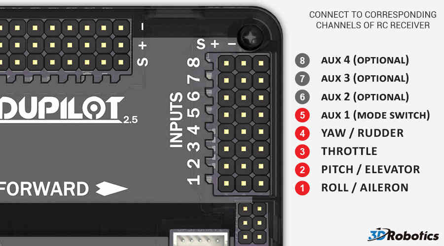

Archived:Connecting the Radio Receiver (APM2)¶
Warning
ARCHIVED
The APM2.x is end of life for use with ArduPilot. This article is made available for existing users.
This topic shows how to connect the RC inputs to the APM2.x controller board.
Connecting a Receiver¶
Connect your RC receiver “S” (signal) pins to the “S” pins on Inputs of APM using a (minimum 5 pin) jumper cable (6-pin-to-6-pin-individual-female-15cm). You must connect at least channels 1 ~ 5. Channels 6 ~ 8 are optional.

Your RC receiver will require power. Normally this is done by using one 2 or 3 wire connector between the APM Inputs and one channel output on the receiver. See APM Power Details for limitations and important warnings.
{kind=link}
Connecting a PPM Sum Receiver¶
PPM receivers transmit all the channel information above through a single port (some will transmit additional channels - for example the FrSky D8RSP receiver outputs 7 PWM channels, while in CPPM mode it will output 8).
On APM2 you can use PPM input by putting a jumper on the RC inputs for channel 2 and 3 (just the signal pins). PPM input from the receiver should be fed into channel 1.

If you need to rearrange the channel order when using PPM and are unable to do this from the transmitter, you can do this with the RCMAP Advanced parameters. Read more about them here.
[site wiki=”copter”] .. note:
Copter 2.8.1 and earlier versions required you use a
transmitter/receiver combination that outputs at least 8 channels of ppm
information. This is resolved in version 2.9 so receivers like this
should work.
[/site]